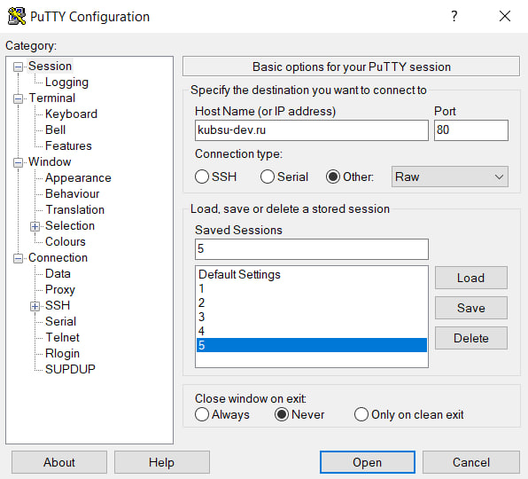
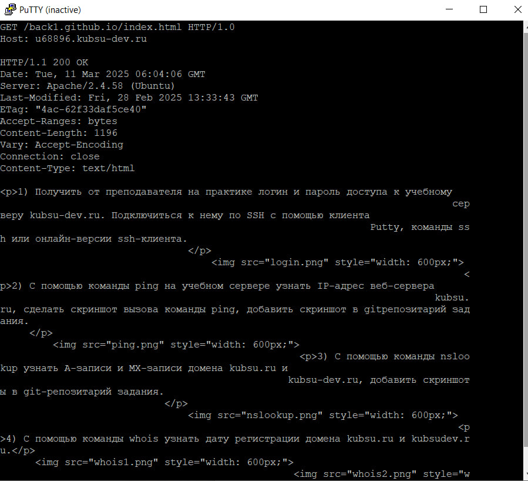

Создание соединения c хостом kubsu-dev.ru по стандартному порту 80 в протокле сетевой печати RAW с помощью программы Putty
 Получили главную сайта kubsu-dev.ru страницу методом GET в протоколе HTTP 1.0
По умолчанию сервер отвечает по протоколу HTTP 1.1
Получили внутреннюю страницу сайта u68896.kubsu-dev.ru методом GET в протоколе HTTP 1.1
Определили информацию о файле file.tar.gz, не скачивая его.
Для получения информации о файле был использован HEAD запрос.
Данная информация содержится в заголовке ответа в графе "Content-Length" и состaвляет 11335 байт
Определили медиатип расположенного на удаленном сервере. ресурса /image.png
Для определения медиатипа был использован HEAD запрос
Данная информация содержится в заголовке ответа в графе "Content-Type"
Отправили комментарий на сервер по адресу u68896.kubsu-dev.ru/back21/index.php
Для отправки комментария был использован POST запрос в теле которого был указан сам комментарий.
Получили первые 100 байт файла /file.tar.gz
Для их получения был использован GET запрос с заголовком Range
В заголовке Range указано что нужно получить именно первые 100 байт из файла
Определили кодировку ресурса /index.php.
Для этого был отправлен GET запрос с заголовком Accept-Charset, в котором была установлена кодировка utf-8